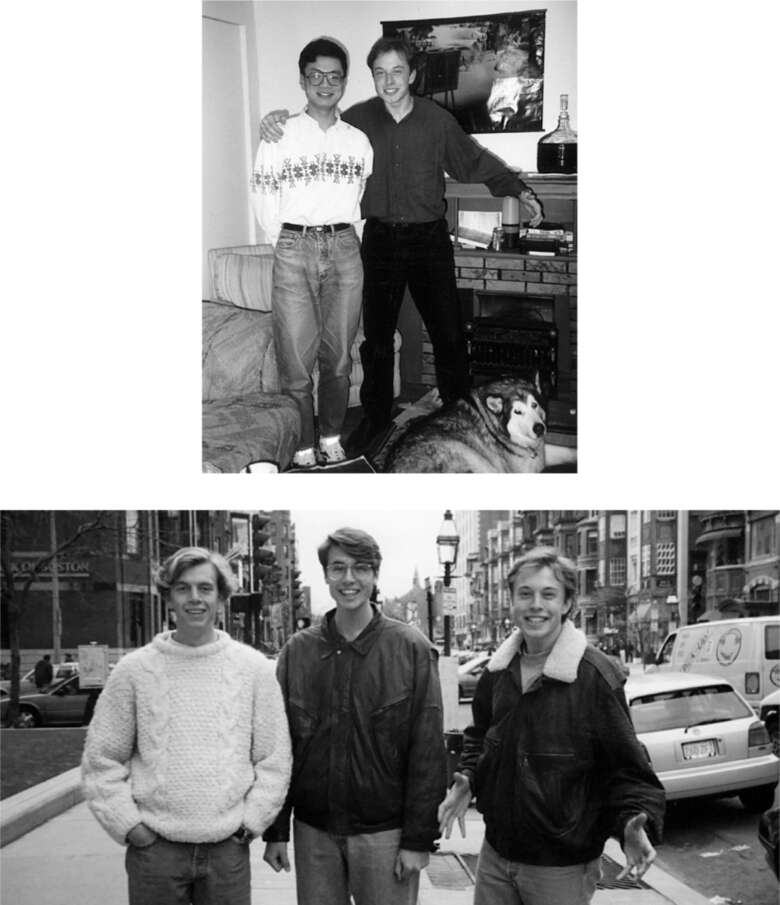

Vật lý
Musk cảm thấy chán ở Queen’s. Trường rất đẹp, nhưng không đủ thử thách về mặt học thuật. Vì vậy, khi một trong những người bạn cùng lớp của anh chuyển đến Đại học Pennsylvania, anh quyết định xem mình có thể làm như vậy không.
Tiền bạc là một vấn đề. Cha anh không hỗ trợ gì, còn mẹ anh phải làm ba công việc để kiếm sống. Nhưng Penn đã đề nghị cho anh một suất học bổng 14.000 đô la cộng với một gói vay sinh viên, vì vậy vào năm 1992, anh đã chuyển đến đó cho năm học thứ ba của mình.
Anh quyết định chọn chuyên ngành vật lý vì, giống như cha mình, anh bị thu hút bởi kỹ thuật. Anh cảm thấy, bản chất của một kỹ sư là giải quyết bất kỳ vấn đề nào bằng cách đi sâu vào các nguyên lý cơ bản nhất của vật lý. Anh cũng quyết định theo đuổi bằng kép về kinh doanh. “Tôi lo lắng rằng nếu không học kinh doanh, tôi sẽ buộc phải làm việc cho một người nào đó có bằng cấp đó,” anh nói. “Mục tiêu của tôi là thiết kế sản phẩm bằng kiến thức vật lý và không bao giờ phải làm việc cho một ông chủ có bằng kinh doanh.”
Mặc dù không hoạt động chính trị cũng không phải là người quảng giao, anh vẫn tranh cử vào hội đồng sinh viên. Một trong những cam kết trong chiến dịch tranh cử của anh là chế giễu những người tìm kiếm chức vụ trong hội sinh viên để làm đẹp hồ sơ xin việc của họ. Lời hứa cuối cùng trong cương lĩnh tranh cử của anh là “Nếu chức vụ này xuất hiện trên hồ sơ xin việc của tôi, tôi sẽ trồng cây chuối và ăn 50 bản sao của tài liệu xúc phạm đó ở nơi công cộng.” May mắn thay, anh đã thua, điều này đã cứu anh khỏi việc rơi vào nhóm sinh viên chính phủ, một thế giới mà anh không phù hợp về tính cách. Thay vào đó, anh hòa nhập thoải mái với một nhóm mọt sách thích tạo ra những trò đùa thông minh liên quan đến các lực khoa học, chơi Dungeons & Dragons, say mê trò chơi điện tử và viết mã máy tính.
Người bạn thân nhất của anh trong đám đông này là Robin Ren, người đã giành chiến thắng trong Kỳ thi Olympic Vật lý ở quê hương Trung Quốc trước khi đến Penn. “Anh ấy là người duy nhất giỏi vật lý hơn tôi”, Musk nói. Họ trở thành cộng sự trong phòng thí nghiệm vật lý, nơi họ nghiên cứu cách các đặc tính của nhiều loại vật liệu thay đổi ở nhiệt độ khắc nghiệt. Vào cuối một loạt thí nghiệm, Musk lấy cục tẩy ở đầu bút chì, thả chúng vào một lọ chất lỏng siêu lạnh, sau đó đập chúng xuống sàn. Anh bắt đầu thích tìm hiểu và hình dung các đặc tính của vật liệu và hợp kim ở các nhiệt độ khác nhau.
Ren nhớ lại rằng Musk tập trung vào ba lĩnh vực định hình sự nghiệp của anh. Cho dù đang hiệu chỉnh lực hấp dẫn hay phân tích các đặc tính của vật liệu, anh ấy đều thảo luận với Ren về cách các định luật vật lý áp dụng để chế tạo tên lửa. “Anh ấy liên tục nói về việc chế tạo một tên lửa có thể lên sao Hỏa”, Ren nhớ lại. “Tất nhiên, tôi không chú ý lắm, vì tôi nghĩ anh ấy đang mơ mộng.”
Musk cũng tập trung vào xe điện. Anh và Ren thường mua bữa trưa từ một trong những xe bán đồ ăn và ngồi trên bãi cỏ trong khuôn viên trường, nơi Musk đọc các bài báo học thuật về pin. California vừa thông qua yêu cầu bắt buộc 10% xe vào năm 2003 phải là xe điện. “Tôi muốn biến điều đó thành hiện thực”, Musk nói.
Musk cũng tin rằng năng lượng mặt trời, thứ mới bắt đầu phát triển vào năm 1994, là con đường tốt nhất hướng tới năng lượng bền vững. Bài luận tốt nghiệp của anh có tựa đề “Tầm quan trọng của Năng lượng Mặt trời”. Anh ấy được thúc đẩy không chỉ bởi những nguy hiểm của biến đổi khí hậu mà còn bởi thực tế là trữ lượng nhiên liệu hóa thạch sẽ bắt đầu cạn kiệt. “Xã hội sẽ sớm không có lựa chọn nào khác ngoài việc tập trung vào các nguồn năng lượng tái tạo”, anh viết. Trang cuối cùng của anh ấy cho thấy một “nhà máy điện của tương lai”, bao gồm một vệ tinh với các tấm gương sẽ tập trung ánh sáng mặt trời vào các tấm pin mặt trời và gửi điện năng thu được trở lại Trái đất thông qua chùm tia vi sóng. Giáo sư cho anh điểm 98, nói rằng đó là một “bài báo rất thú vị và được viết tốt, ngoại trừ hình cuối cùng xuất hiện hơi bất ngờ.”
Trong suốt cuộc đời, Musk có ba cách để thoát khỏi những biến động cảm xúc mà anh ấy thường tạo ra. Cách đầu tiên là cách anh ấy chia sẻ với Navaid Farooq tại Queen’s: khả năng đắm chìm vào các trò chơi chiến lược xây dựng đế chế, chẳng hạn như Civilization và Polytopia. Robin Ren phản ánh một khía cạnh khác của Musk: người đọc bách khoa toàn thư thích đắm mình vào, như The Hitchhiker’s Guide đã nói, “Sự sống, Vũ trụ và Mọi thứ.”
Tại Penn, anh ấy đã phát triển một phương thức thư giãn thứ ba—thích tiệc tùng—đã kéo anh ấy ra khỏi vỏ bọc cô đơn bao quanh anh ấy khi còn nhỏ. Người bạn đồng hành và hỗ trợ anh là một người hòa đồng, vui vẻ tên là Adeo Ressi. Một chàng trai cao lớn với cái đầu to, tiếng cười sảng khoái và tính cách mạnh mẽ, Ressi là một người Mỹ gốc Ý đến từ Manhattan, rất thích các câu lạc bộ đêm. Một nhân vật khác thường, anh ấy đã thành lập một tờ báo môi trường có tên Green Times và cố gắng tạo ra chuyên ngành riêng của mình có tên là “Cách mạng” với các bản sao của tờ báo làm luận án tốt nghiệp.
Giống như Musk, Ressi là sinh viên chuyển trường, vì vậy họ được xếp vào ký túc xá sinh viên năm nhất, nơi có quy định cấm tiệc tùng và khách đến thăm sau 10 giờ tối. Cả hai đều không thích tuân theo các quy tắc, vì vậy họ đã thuê một ngôi nhà ở một khu vực khá phức tạp của Tây Philadelphia.
Ressi nghĩ ra cách tổ chức những bữa tiệc lớn hàng tháng. Họ che kín cửa sổ và trang trí ngôi nhà bằng đèn đen và áp phích phát quang. Có lần Musk phát hiện ra chiếc bàn làm việc của mình đã bị Ressi sơn bằng sơn dạ quang và đóng đinh lên tường, coi đó như một tác phẩm nghệ thuật sắp đặt. Musk gỡ nó xuống và tuyên bố rằng, không, đó là một cái bàn làm việc. Tại một bãi phế liệu, họ tìm thấy một tác phẩm điêu khắc bằng kim loại hình đầu ngựa và đặt một đèn đỏ bên trong, khiến ánh sáng phát ra từ mắt nó. Có một ban nhạc ở tầng này, một DJ ở tầng khác, bàn bia và thạch rượu, và ai đó ở cửa để thu phí vào cửa 5 đô la. Vào một số đêm, họ thu hút năm trăm người, đủ để trả tiền thuê nhà trong một tháng.
Khi Maye đến thăm, bà đã rất kinh hoàng. "Tôi đã đổ đầy tám túi rác và quét dọn nơi này, và tôi nghĩ họ sẽ biết ơn," bà nói. "Nhưng họ thậm chí còn không nhận ra." Trong bữa tiệc tối hôm đó, họ bố trí bà ở trong phòng ngủ của Elon gần cửa trước để giữ áo khoác và trông coi tiền. Bà cầm một chiếc kéo trong tay, nghĩ rằng bà có thể dùng nó với bất kỳ ai cố gắng lấy trộm hộp tiền, và bà chuyển nệm của Elon đến cạnh một trong những bức tường bên ngoài. "Ngôi nhà rung chuyển và nảy lên rất nhiều vì âm nhạc đến nỗi tôi nghĩ trần nhà có thể sập, vì vậy tôi nghĩ nếu tôi ở mép tường thì sẽ an toàn hơn."
Mặc dù Elon thích không khí của các bữa tiệc, nhưng anh chưa bao giờ thực sự hòa mình vào chúng. "Lúc đó tôi hoàn toàn tỉnh táo," anh nói. "Adeo thì say xỉn. Tôi đã phải gõ cửa phòng anh ấy và nói, kiểu như, 'Này anh bạn, anh phải lên quản lý bữa tiệc chứ.' Cuối cùng tôi lại là người phải để mắt đến mọi thứ."
Sau này, Ressi ngạc nhiên rằng Musk thường có vẻ hơi xa cách. "Anh ấy thích ở gần bữa tiệc nhưng không hoàn toàn tham gia vào đó. Thứ duy nhất anh ấy say mê là trò chơi điện tử." Bất chấp tất cả các bữa tiệc của họ, anh ấy hiểu rằng Musk về cơ bản là xa lánh và thu mình, giống như một người quan sát từ một hành tinh khác đang cố gắng học cách giao tiếp xã hội. "Tôi ước Elon biết cách để hạnh phúc hơn một chút," anh nói.

Với Robin Ren tại Penn; với anh họ Peter Rive và Kimbal ở Boston